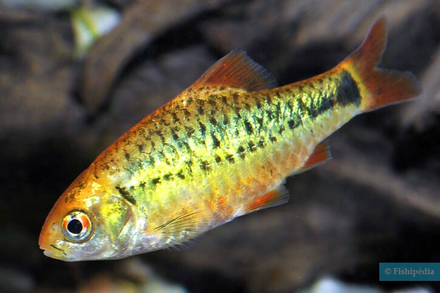
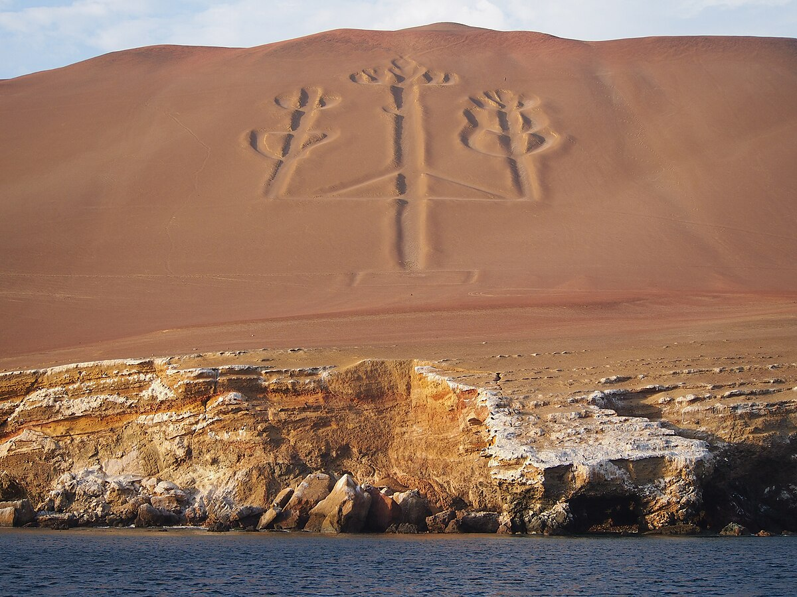
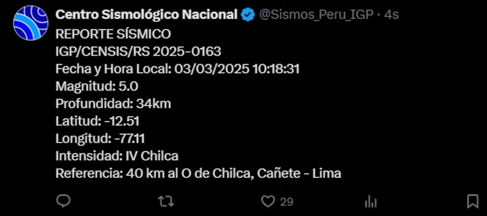
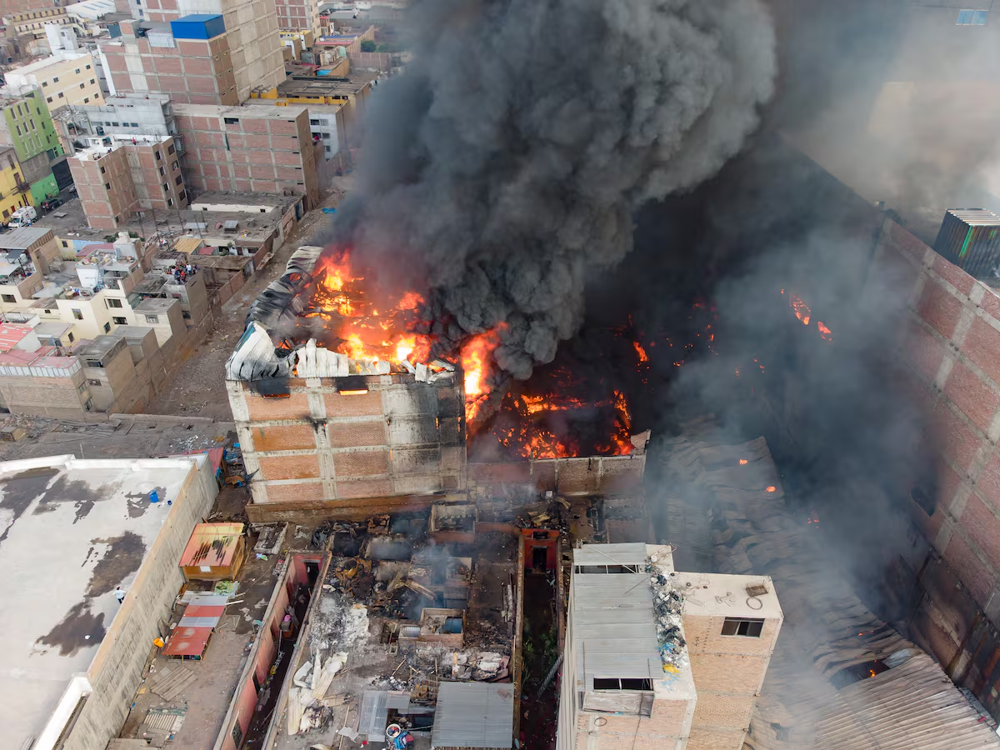
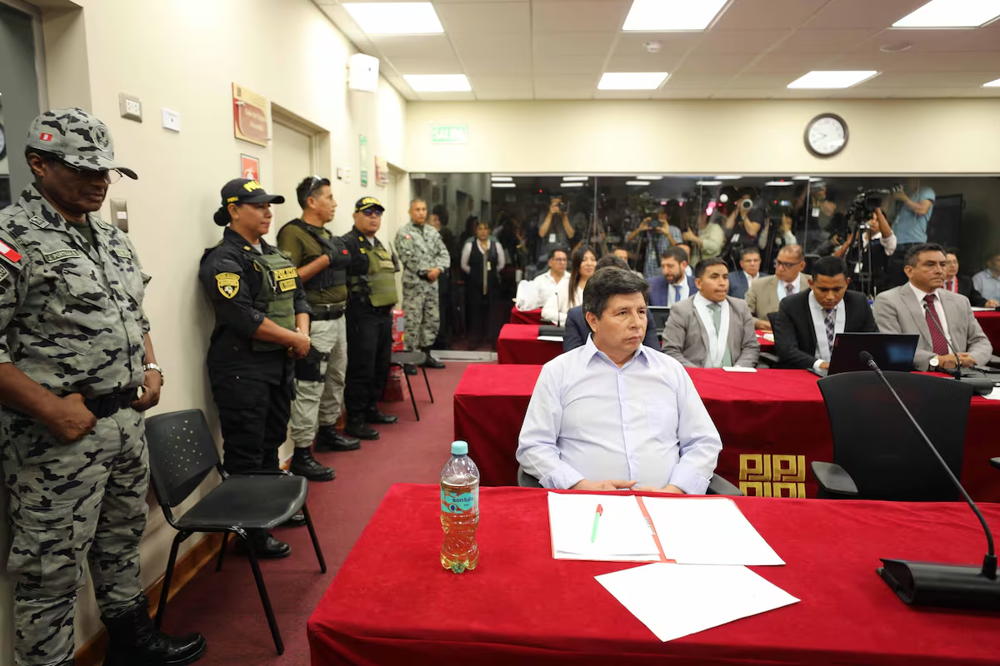

Nuevas medidas de seguridad para suicida
El pez augusto, alias "suicida", casi se suicida de nuevo y por eso las autoridades tomaron medidas para evitar otro suceso. Las medidas fueron confeccionar una malla de contención.
¡El Capibara Fest en El Parque de las Leyendas!

En El Parque de las Leyendas va a ver un evento muy especial llamado "Capibara fest" cuya atracción principal es el capibara "Wilson Ronsoco Carpincho". Las primeras 50 personas que tengan el nombre "Wilson" tendrán entrada gratis a la sede de San Miguel. Van a ver muchas actividades entre ellas un concurso de botargas, un show artistico ¡Entre otros!
Paracas, ¡Tu próximo destino!
Paracas es un excelente sitio como para ir este verano hay atracciones como: Las Islas ballestas, donde podrás ver pingüinos y lobos de mar entre otras cosas ; Las líneas de Nazca, donde podras subirte a un aeroplano y ver las lineas del cielo; Yaku park, aquí podrás pasar a través de una carrera de obstaculos ¡En el Mar!; entre otras más.
Fuerte sismo de magnitud 5 remeció hoy Lima: IGP descarta alerta de tsunami y pide a la población estar preparada
Este día 3 de marzo del 2025 a las 10:18:31 hubo un temblor de magnitud 4.0 e intensidad IV a 40 km de Lima. Según Defensa Civil No hay daños materiales ni humanos, a la población le piden estar alertas ante posibles replicas. las 12:20 p.m. un nuevo sismo se sintió en la capital. El movimiento de 3.5 grados ocurrido también en Chilca, Cañete es el quinto que ocurre en las últimas 48 horas.
¡INCENDIO EN BARRIOS ALTOS!
Los bomberos llevan trabajando hace 5 dias y todavia no se apaga porque se sigue expandiendo a estructuras cercanas, estas con material inflamable. Los bomberos estiman que sera apagado el martes
Juicio contra el ex-presidente Pedro Castillo
El 7 de Diciembre del 2022 Pedro Castillo Cerró el congreso e hizo un autogolbre de estado, desatando confusión en todo el país, tiendas cerraron las clases se suspendieron, las personas corrían a sus casas. Castillo fue detenido camino a la embajada de México, desde entonces está detenido en el penal de Barbadillo. Durante el juicio, Pedro Castillo insistió en que se hiciera público un documento que ya estaba en sus redes sociales, pero la jueza Norma Carbajal le recordó que la etapa del proceso era oral. Debido a estas tensiones, la audiencia comenzó con retraso. En la sala también estaban Betssy Chávez, Aníbal Torres y Willy Huerta. En el documento, Castillo se define como un “presidente constitucional secuestrado” y asume la responsabilidad de sus actos el 7 de diciembre. Afirma que su mensaje no fue un intento de golpe, sino un “discurso político justo”, y culpa a la extrema derecha de una conspiración en su contra. Además, denuncia que fue apresado violentamente junto a su familia. La Fiscalía ha reunido 75 pruebas y testimonios tras dos años de investigación. Según su tesis, la noche antes del 7 de diciembre de 2022, Castillo se reunió con Betssy Chávez y Aníbal Torres en Palacio, y este último redactó el mensaje del autogolpe. La Fiscalía considera el juicio como un hecho sin precedentes en la historia del país. El Ministerio Público ha solicitado 34 años de prisión para Castillo, 15 para Torres y 25 para los demás acusados, además de una reparación civil de 65 millones de soles. Mientras tanto, seguidores de Castillo protestaron por su libertad afuera del penal de Barbadillo. En un momento clave del juicio, el exmandatario declaró en voz alta: “Jamás cometí delito de rebelión”. La próxima audiencia será este jueves.
¡Nuevo logo!
El dia de hoy se ha hecho un nuevo logo de Noticias Pe basado en el capibara he aqui el logo.